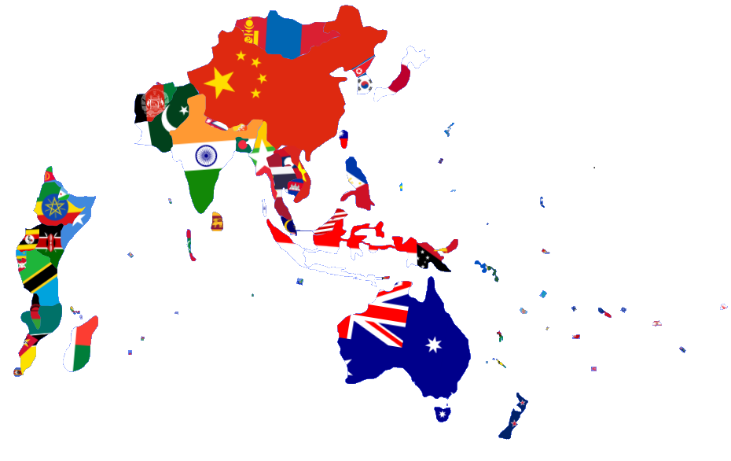

¡Encuentra toda la información que necesitas sobre las 6 regiones geopolíticas!
Ver más ->
Desde Etiopía, Kenia, Tanzania, Uganda, Ruanda, Burundi, Somalia, Esuatini, Yibuti, Eritrea, Malawi, Mozambique y hasta las islas de Seychelles y Madagascar. Estos países están ligados por la placa somalí y su historia evolutiva.
Incluye a China, Mongolia, Corea del Sur, Japón, Corea del Norte, India, Pakistán, Afganistán, Nepal, Bután, Bangladés, Sri Lanka, Vietnam, Laos, Camboya, Tailandia, Malasia, Indonesia, Filipinas, Singapur, Brunéi y Timor Oriental.
Estan Australia, Nueva Zelanda, Papúa Nueva Guinea y todas esas islas pequeñas del Pacífico como Fiyi, Vanuatu, las Islas Salomón, Kiribati, Islas Marshall, Estados Federados de Micronesia, Nauru, Palaos, Samoa, Tonga y Tuvalu.